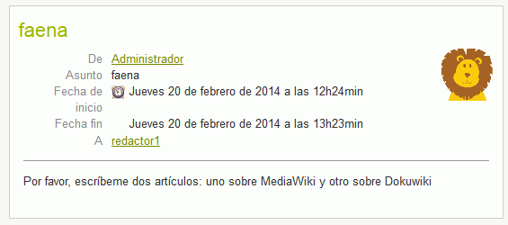
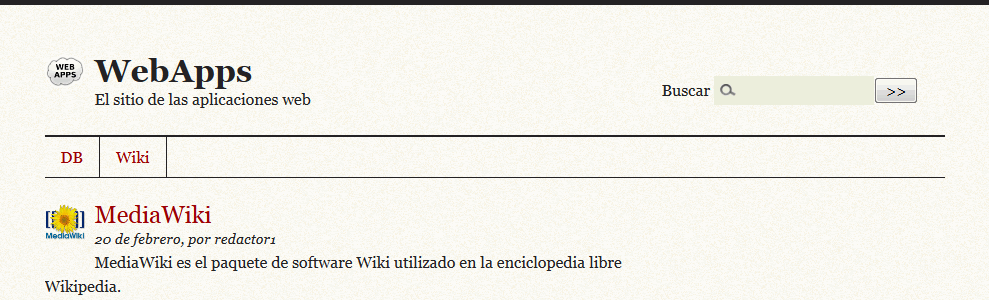
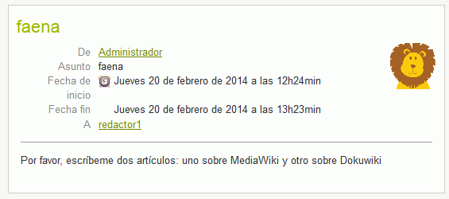
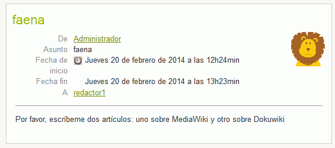

Entrar en phpMyAdmin como usuario root y crear un usuario de MySQL con nombre iwb_spip_1, contraseña iwb_spip_1 y base de datos iwb_spip_1.
Iniciar la instalación de SPIP en español
Datos de instalación:
Nombre del administrador: Administrador
Correo electrónico de contacto: administrador@example.com
Usuario: admin
Contraseña: adminadmin
Una vez completada la instalación, hacer una captura del panel del administrador y una captura del sitio:
3. Traducción al español
Seleccionar el idioma español como idioma del sitio en los dos lugares necesarios y comprobar que la página del sitio para vistantes se muestra completamente en español (puede ser necesario vaciar la caché de SPIP).
Hacer una captura de toda la pantalla desconectado:
4. Información del sitio y del administrador
El sitio web estará dedicado a las aplicaciones web. Adaptar el nombre y logo del sitio. Hacer una captura de toda la pantalla desconectado:
Asociar una imagen al usuario administrador (el león).
5. Contenido
Como usuario administrador:
Crear dos secciones:
DB, dedicada a la administración de bases de datos
Wiki, dedicada a las wikis
Crear dos artículos en la sección de bases de datos:
phpMyAdmin
phpMyAdmin es una aplicación web para la administración de bases de datos MySQL.
pgAdmin3
pgAdmin3 es una herramienta de administración y desarrollo para la base de datos PostgreSQL.
Asociar imágenes: asociar a los artículos los logotipos de las aplicaciones y a la sección el logotipo de la base de datos azul.
Hacer una captura de toda la pantalla desconectado:
6. Usuarios
Crear usuario redactor1, contraseña redactor1, corrreo redactor1@example.com, con estatus de redactor e imagen de usuario (el oso).
Mandar un mensaje al redactor1 pidiéndole que escriba dos artículos sobre MediaWiki y DokuWiki (que le aparezcan en el calendario).
Como usuario redactor1:
Comprobar que se ha recibido el mensaje (hacer tres capturas de toda la pantalla):

Redactar un artículo, asociándole el logo de MediaWiki y ajuntando esta guía de usuario de MediaWiki en formato PDF. Pedir al administrador que lo publique (hacer una captura de toda la pantalla):
MediaWiki
MediaWiki es el paquete de software Wiki utilizado en la enciclopedia libre Wikipedia.
Publicar el artículo. Hacer dos capturas de toda la pantalla (página de inicio y artículo):

7. Alias
Configurar el servidor y SPIP de manera que se acceda a SPIP mediante la dirección https://localhost/spip.
Hacer una captura de toda la pantalla en la que el ratón se sitúe sobre el título del artículo y se vea abajo a la izquierda el destino del enlace:
Hacer un captura del archivo de configuración del servidor en el que se vean las líneas añadidas.
8. Copia de seguridad
Entrar en phpMyAdmin como usuario iwb_spip_1 y exportar la tabla con el método rápido al fichero iwb_spip_1.sql.


 
